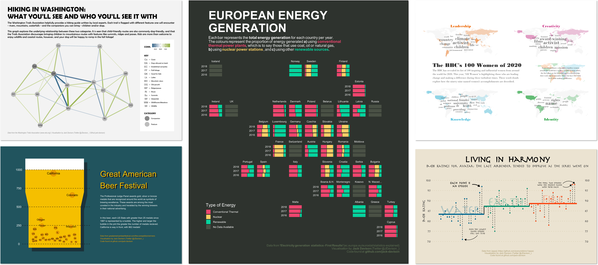

Data Visualisation
Creating effective static and interactive data visualisation.
I am passionate about data visualisation and communication in all of its forms. This page details some of the projects I’ve been part of.
TidyTuesday
#TidyTuesday is a weekly data challenge which tests the R community to tidy and visualise an unseen dataset, which could be related to anything from astronauts to zoo animals! Figure 1 is a collage of a few of my favourite contributions, with my full repo found at https://github.com/jack-davison/TidyTuesday.

DuBois Challenge
The DuBois Challenge is a challenge to recreate historic, hand drawn data visualisations using modern tools. The visualisations are specifically the work of data-viz pioneer W.E.B. DuBois, known for his subversive, geometric, ahead-of-his-time designs.
I took part in the DuBois Challenge as part of #TidyTuesday (above), but my deepest examination of DuBois’ work was in my submission for the Posit Table Contest 2022, Tabulating DuBois, wherein I attempted to translate the work of DuBois to a more tabular medium with {gt}.